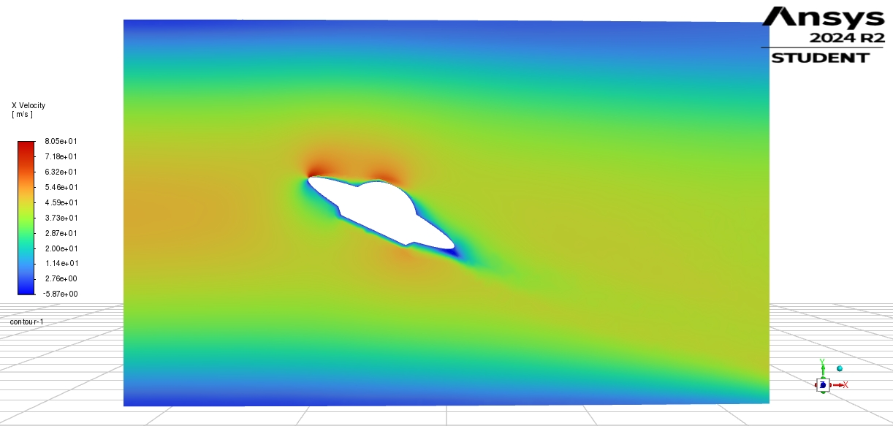
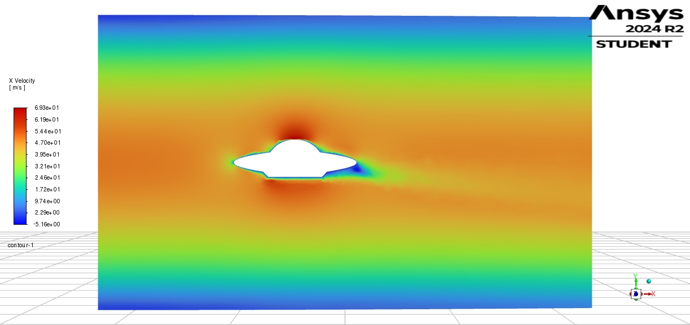
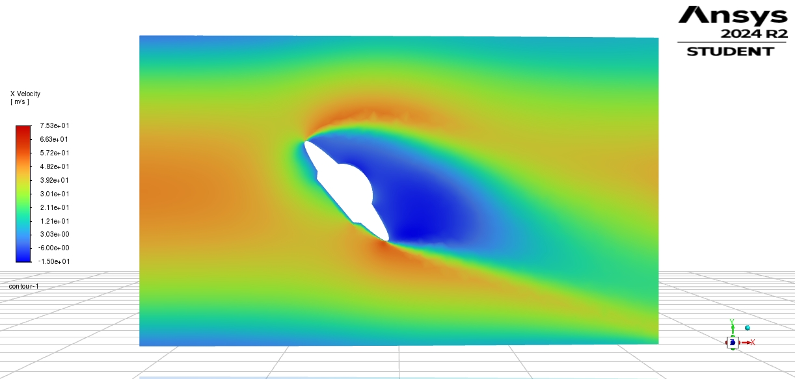
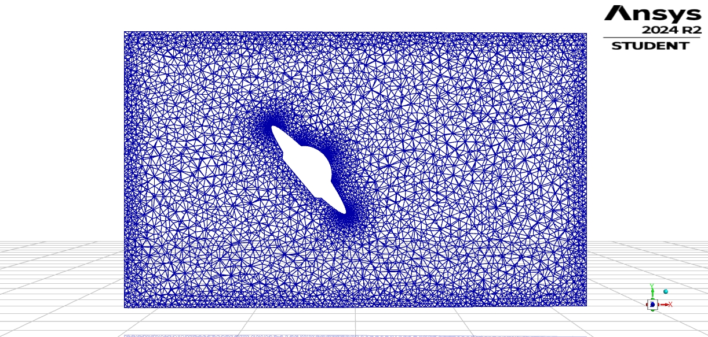

Flying Saucer — Angle Sweep (3D External Aero)

Task: evaluate how tilting a saucer-like body changes flow separation and integrated forces.
Setup: uniform inlet, k–ω SST, symmetry plane; three attitudes θ = 0°, 25°, 50°.
Observation: as θ increases, downstream jet deflects and wake widens; qualitative lift/drag trends follow separation extent.
Note: Force values were summarised from Fluent reports; image of the report table was replaced by this text for clarity.

X-velocity contour, θ=0°
X-velocity contour, θ=25°

X-velocity contour, θ=50°

Unstructured surface mesh on symmetry plane (θ=50°) showing refinement.